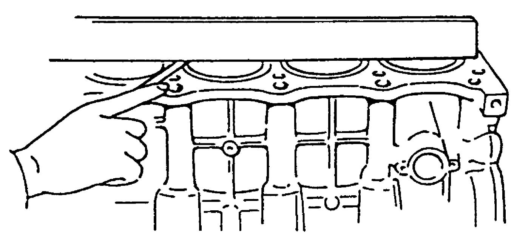

1D
| Cylinder Block Inspection |
Using straightedge and feeler gauge, check gasket surface for distortion. If flatness exceeds its limit, repair it.
If repair is not possible, replace cylinder block.
Flatness limit
0.1 mm (0.004 in.)

 "Expand image")
Honing or Reboring Cylinder
1)When any cylinder needs reboring, all other cylinders must also be rebored at the same time.
2)Using micrometer, measure piston diameter.
3)Calculate cylinder bore diameter to be rebored as follows.
D = A + B – C
D: Cylinder bore diameter to be rebored
A: Piston diameter as measured
B: Piston clearance = 0.06 – 0.08 mm (0.0024 – 0.0031 in.)
C: Allowance for honing = 0.02 mm (0.0008 in.)
D = A + B – C
D: Cylinder bore diameter to be rebored
A: Piston diameter as measured
B: Piston clearance = 0.06 – 0.08 mm (0.0024 – 0.0031 in.)
C: Allowance for honing = 0.02 mm (0.0008 in.)
4)Rebore and hone cylinder to calculated dimension.
NOTE:
Before reboring, install lower main bearing caps and tighten to specification to avoid distortion of bearing bores.
5)Measure piston clearance after honing.